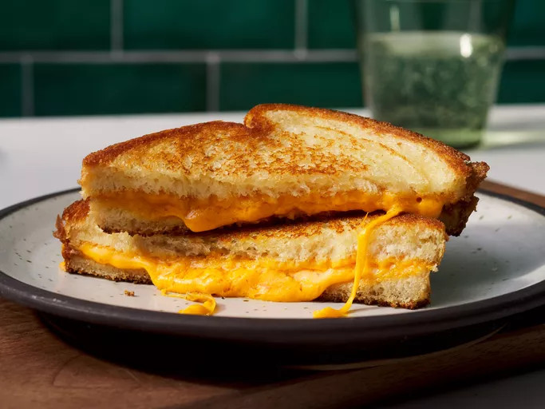

Grilled Cheese
Home

Description
A grilled sandwich with the need of a slice of cheese and butter to make the perfect combo that you can never imagine.
This is a fan favorite everywhere and a kid go to for simplicity, this is something you have to learn before you burn the next attempt!
Ingredients
- 4 slices of bread
- 2 slices of cheese (cheddar preferred)
- 3 tablespoons of butter, divided
Steps
- Step 1: Gather all ingredients
- Step 2: Preheat a nonstick skillet over medium heat. Generously butter one side each bread slice.
- Step 3: Place 1 slice bread, butter-side down, in the hot skillet; top with 1 slice cheese.
- Step 4: Place 1 slice bread, butter-side up, on top cheese.
- Step 5: Cook until lightly browned on one side; flip and continue cooking until cheese is melted.
- Step 6: Repeat with remaining bread and cheese slices. Serve and enjoy!